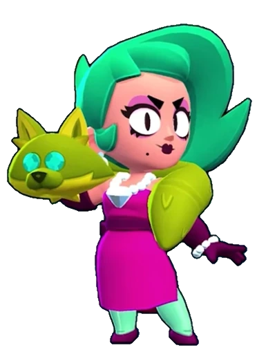

¿Quién es Lola?
Al entrar en una sala, Lola atrae todas las miradas. Es experta en montar una escena para conseguir lo que quiere ¡y se enorgullece mucho de ello!
Lola es una Brawler Épica (anteriormente de rareza Cromática) la cual estuvo disponible en el Brawl Pass "Brawlywood" (temporada 9), pudiéndose conseguir en el nivel 30 del Brawl Pass o obtenerla mediante el Camino Starr. Lola ataca disparando seis joyas a larga distancia. Su Súper invoca a su Ego, un clon que se mueve cada vez que Lola se mueve y ataca cada vez que Lola ataca.
|  |
NIVEL DE FUERZA 11 |
Sus gadgets
POSE GLAMUROSA: El ego de Lola se detiene para posar ante las cámaras. Lola adquiere un escudo de un 50% durante 4 segundos. |
DOBLE RIESGO: Lola y su ego cambian de posiciones y recuperan 1500 puntos de salud. |
Sus habilidades estelares
 |
IMPROVISACIÓN: Cuando lanza sus últimos disparos, Lola inflige un 30% de daño extra. |
 |
LEGIÓN DE FANS: Los proyectiles del ego de Lola recuperarán 208 puntos de salud a los brawlers aliados que se encuentren en su camino. |
 Braian Arancibia
Braian Arancibia Aya El Baarar
Aya El Baarar